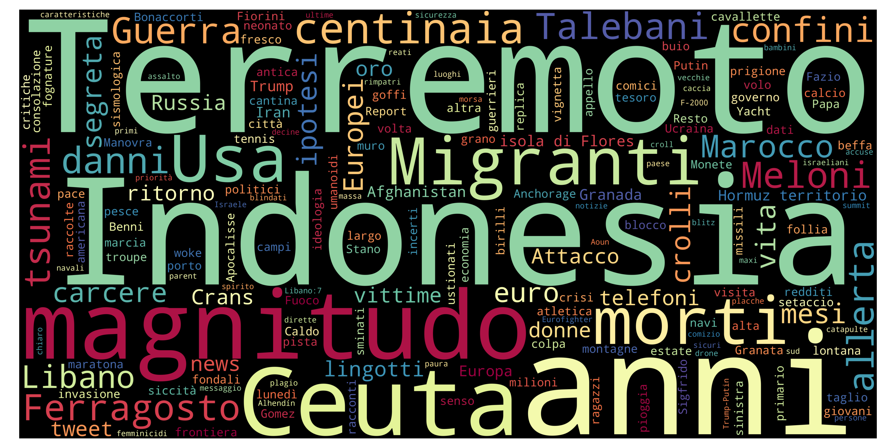
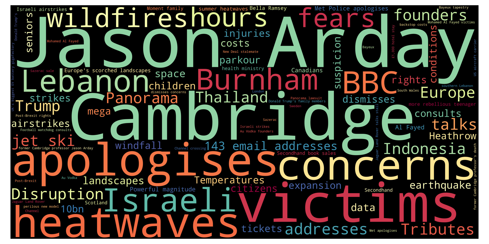
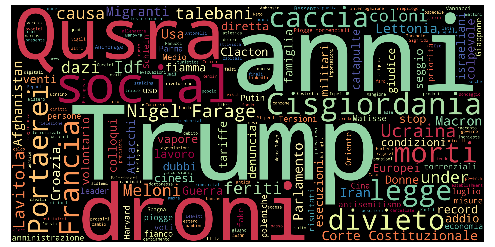
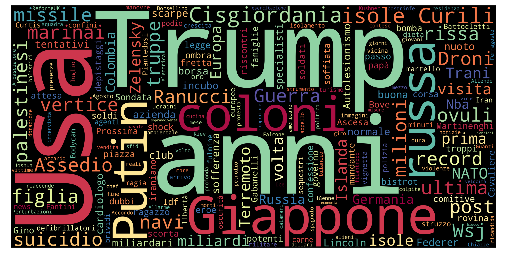
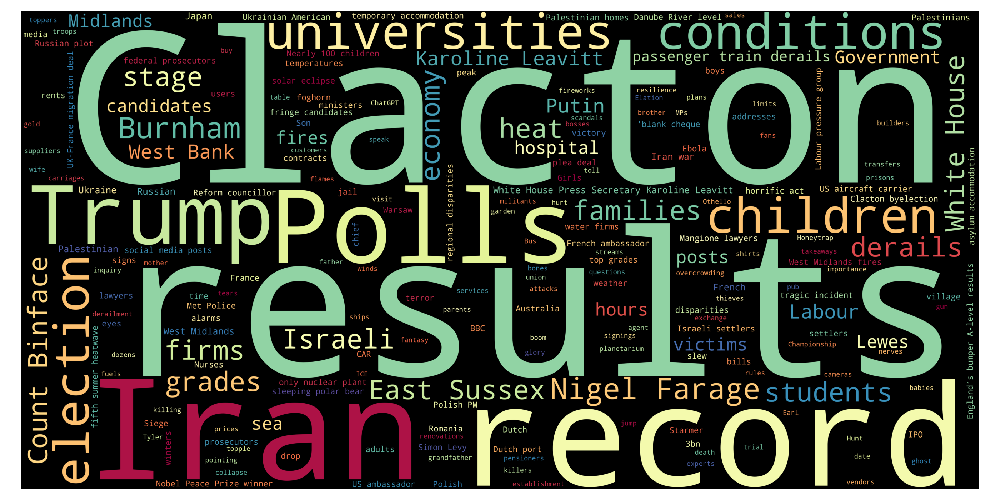

European News Dashboard
Daily view
Last update: 21 Aug 2026, 16:35 CEST
🇮🇹 Italy — 21 Aug 2026
Updated: 21 Aug 2026, 16:35 CESTWordcloud

Top 10 unigrams
| Term | Frequency |
|---|---|
| meloni | 6 |
| trump | 5 |
| guerra | 5 |
| netanyahu | 4 |
| turchia | 4 |
| carcere | 3 |
| facile | 3 |
| fulmine | 3 |
| maltempo | 3 |
| donna | 3 |
Top 10 phrases
| Term | Frequency |
|---|---|
| us open | 2 |
| meeting di rimini | 2 |
| arresto internazionale | 2 |
Top 10 new terms (not present on previous day)
| Term | Current day frequency |
|---|---|
| netanyahu | 4 |
| turchia | 4 |
| facile | 3 |
| mandato | 3 |
| fulmine | 3 |
| carcere | 3 |
| meeting di rimini | 2 |
| partner | 2 |
| umanità | 2 |
| nemico | 2 |
Top 10 increasing terms (vs previous day)
| Term | Difference | Current day frequency | Previous day frequency |
|---|---|---|---|
| trump | 2 | 5 | 3 |
| maltempo | 2 | 3 | 1 |
| salvini | 1 | 2 | 1 |
| meloni | 1 | 6 | 5 |
| trasferimento | 1 | 2 | 1 |
| donna | 1 | 3 | 2 |
| news | 1 | 2 | 1 |
| migranti | 1 | 2 | 1 |
| kiev | 1 | 2 | 1 |
| guerra | 1 | 5 | 4 |
Top 10 decreasing terms (vs previous day)
| Term | Difference | Current day frequency | Previous day frequency |
|---|---|---|---|
| harry | -4 | 1 | 5 |
| anno | -3 | 2 | 5 |
| meghan | -3 | 2 | 5 |
| mps | -1 | 1 | 2 |
| morte | -1 | 1 | 2 |
| notizia | -1 | 1 | 2 |
| piano | -1 | 1 | 2 |
| ucraina | -1 | 1 | 2 |
| ultimo | -1 | 1 | 2 |
| iran | -1 | 2 | 3 |
🇬🇧 UK — 21 Aug 2026
Updated: 21 Aug 2026, 16:35 CESTWordcloud

Top 10 unigrams
| Term | Frequency |
|---|---|
| charge | 7 |
| harry | 7 |
| london | 6 |
| trump | 5 |
| australia | 5 |
| egg | 4 |
| body | 4 |
| meghan | 4 |
| migrant | 3 |
| bid | 3 |
Top 10 phrases
| Term | Frequency |
|---|---|
| prince harry | 5 |
| daily mail | 4 |
| west bank | 4 |
| rape charges | 4 |
| daily mail publisher | 3 |
| manchester synagogue attack | 3 |
| banned driver | 3 |
| el niño | 2 |
| pregnant women | 2 |
| runny eggs | 2 |
Top 10 new terms (not present on previous day)
| Term | Current day frequency |
|---|---|
| rape charges | 4 |
| daily mail publisher | 3 |
| banned driver | 3 |
| youtuber | 3 |
| japan | 3 |
| manchester synagogue attack | 3 |
| grandfather | 3 |
| nhs | 2 |
| dr congo ebola outbreak | 2 |
| organiser | 2 |
Top 10 increasing terms (vs previous day)
| Term | Difference | Current day frequency | Previous day frequency |
|---|---|---|---|
| charge | 6 | 7 | 1 |
| australia | 3 | 5 | 2 |
| body | 3 | 4 | 1 |
| egg | 3 | 4 | 1 |
| london | 3 | 6 | 3 |
| bid | 2 | 3 | 1 |
| daily mail | 2 | 4 | 2 |
| migrant | 2 | 3 | 1 |
| party | 1 | 2 | 1 |
| shortage | 1 | 2 | 1 |
Top 10 decreasing terms (vs previous day)
| Term | Difference | Current day frequency | Previous day frequency |
|---|---|---|---|
| harry | -10 | 7 | 17 |
| meghan | -8 | 4 | 12 |
| israel | -4 | 3 | 7 |
| burnham | -3 | 3 | 6 |
| court | -2 | 1 | 3 |
| leader | -2 | 1 | 3 |
| flight | -1 | 1 | 2 |
| sale | -1 | 2 | 3 |
| police | -1 | 1 | 2 |
| information | -1 | 1 | 2 |
🇮🇹 Italy — 20 Aug 2026
Updated: 21 Aug 2026, 16:35 CESTWordcloud

Top 10 unigrams
| Term | Frequency |
|---|---|
| morto | 7 |
| meloni | 5 |
| harry | 5 |
| anno | 5 |
| ergastolo | 5 |
| meghan | 5 |
| germania | 5 |
| caldo | 4 |
| fondatore | 4 |
| evergrande | 4 |
Top 10 phrases
| Term | Frequency |
|---|---|
| regno unito | 4 |
| drone marino | 3 |
| almeno morti | 2 |
| colosso immobiliare | 2 |
| sonia bellina | 2 |
| ex ilva | 2 |
Top 10 new terms (not present on previous day)
| Term | Current day frequency |
|---|---|
| harry | 5 |
| meghan | 5 |
| meloni | 5 |
| ergastolo | 5 |
| germania | 5 |
| evergrande | 4 |
| regno unito | 4 |
| israele | 4 |
| finlandia | 4 |
| fondatore | 4 |
Top 10 increasing terms (vs previous day)
| Term | Difference | Current day frequency | Previous day frequency |
|---|---|---|---|
| caldo | 3 | 4 | 1 |
| crollo | 1 | 2 | 1 |
| oro | 1 | 2 | 1 |
| notizia | 1 | 2 | 1 |
| litro | 1 | 2 | 1 |
| donna | 1 | 2 | 1 |
| ucraino | 1 | 2 | 1 |
| alto | 1 | 2 | 1 |
| miniera | 1 | 2 | 1 |
| trump | 1 | 3 | 2 |
Top 10 decreasing terms (vs previous day)
| Term | Difference | Current day frequency | Previous day frequency |
|---|---|---|---|
| iran | -10 | 3 | 13 |
| ucraina | -7 | 2 | 9 |
| zelensky | -6 | 1 | 7 |
| morto | -4 | 7 | 11 |
| rischio | -3 | 1 | 4 |
| staff | -2 | 1 | 3 |
| persona | -2 | 1 | 3 |
| russia | -2 | 1 | 3 |
| trasferito | -2 | 1 | 3 |
| kiev | -2 | 1 | 3 |
🇬🇧 UK — 20 Aug 2026
Updated: 21 Aug 2026, 16:35 CESTWordcloud

Top 10 unigrams
| Term | Frequency |
|---|---|
| harry | 17 |
| meghan | 12 |
| israel | 7 |
| burnham | 6 |
| question | 5 |
| trump | 5 |
| result | 4 |
| plagiarism | 4 |
| university | 4 |
| expert | 4 |
Top 10 phrases
| Term | Frequency |
|---|---|
| prince harry | 6 |
| jason arday | 4 |
| travelodge boss | 4 |
| gcse results | 3 |
| west bank | 3 |
| brain tumour surgery | 3 |
| trevor nelson | 3 |
| como mayor | 3 |
| harry meghan | 2 |
| reignites questions | 2 |
Top 10 new terms (not present on previous day)
| Term | Current day frequency |
|---|---|
| prince harry | 6 |
| question | 5 |
| travelodge boss | 4 |
| plagiarism | 4 |
| parent | 4 |
| gcse | 4 |
| result | 4 |
| university | 4 |
| nigeria | 4 |
| expert | 4 |
Top 10 increasing terms (vs previous day)
| Term | Difference | Current day frequency | Previous day frequency |
|---|---|---|---|
| harry | 14 | 17 | 3 |
| meghan | 9 | 12 | 3 |
| burnham | 4 | 6 | 2 |
| cancer | 2 | 3 | 1 |
| politic | 2 | 3 | 1 |
| boat | 2 | 3 | 1 |
| leader | 2 | 3 | 1 |
| spotlight | 1 | 2 | 1 |
| bbc | 1 | 4 | 3 |
| plan | 1 | 4 | 3 |
Top 10 decreasing terms (vs previous day)
| Term | Difference | Current day frequency | Previous day frequency |
|---|---|---|---|
| london | -7 | 3 | 10 |
| time | -4 | 1 | 5 |
| trump | -4 | 5 | 9 |
| hind rajab | -3 | 2 | 5 |
| asylum seekers | -3 | 2 | 5 |
| seeker | -3 | 2 | 5 |
| police | -3 | 2 | 5 |
| child | -3 | 2 | 5 |
| canada | -2 | 2 | 4 |
| death | -2 | 3 | 5 |
🇮🇹 Italy — 19 Aug 2026
Updated: 21 Aug 2026, 16:35 CESTWordcloud

Top 10 unigrams
| Term | Frequency |
|---|---|
| usa | 14 |
| iran | 13 |
| morto | 11 |
| europa | 11 |
| base | 10 |
| ucraina | 9 |
| accordo | 8 |
| zelensky | 7 |
| anno | 7 |
| canada | 6 |
Top 10 phrases
| Term | Frequency |
|---|---|
| armi nucleari | 4 |
| michele sensi contugi | 3 |
| già quattro trasferiti | 2 |
| almeno morti | 2 |
| basi americane | 2 |
| stretto di hormuz | 2 |
| alpinisti belgi | 2 |
Top 10 new terms (not present on previous day)
| Term | Current day frequency |
|---|---|
| europa | 11 |
| base | 10 |
| canada | 6 |
| dazio | 5 |
| armi nucleari | 4 |
| attacco | 4 |
| kenya | 4 |
| calcutta | 4 |
| arma | 4 |
| rischio | 4 |
Top 10 increasing terms (vs previous day)
| Term | Difference | Current day frequency | Previous day frequency |
|---|---|---|---|
| usa | 10 | 14 | 4 |
| iran | 9 | 13 | 4 |
| morto | 8 | 11 | 3 |
| accordo | 7 | 8 | 1 |
| zelensky | 5 | 7 | 2 |
| anno | 3 | 7 | 4 |
| ucraina | 3 | 9 | 6 |
| morte | 2 | 3 | 1 |
| amico | 1 | 2 | 1 |
| obiettivo | 1 | 2 | 1 |
Top 10 decreasing terms (vs previous day)
| Term | Difference | Current day frequency | Previous day frequency |
|---|---|---|---|
| trump | -9 | 2 | 11 |
| famiglia | -3 | 1 | 4 |
| primo | -2 | 1 | 3 |
| donna | -2 | 1 | 3 |
| migranti | -2 | 1 | 3 |
| palestinese | -2 | 1 | 3 |
| lavoro | -1 | 1 | 2 |
| gaza | -1 | 3 | 4 |
| oman | -1 | 1 | 2 |
| teheran | -1 | 1 | 2 |
🇬🇧 UK — 19 Aug 2026
Updated: 21 Aug 2026, 16:35 CESTWordcloud

Top 10 unigrams
| Term | Frequency |
|---|---|
| london | 10 |
| trump | 9 |
| israel | 6 |
| police | 5 |
| inflation | 5 |
| time | 5 |
| seeker | 5 |
| bill | 5 |
| death | 5 |
| child | 5 |
Top 10 phrases
| Term | Frequency |
|---|---|
| andy burnham | 7 |
| hind rajab | 5 |
| asylum seekers | 5 |
| energy bills | 4 |
| nord stream | 4 |
| christmas island | 3 |
| spacex rocket | 3 |
| five americans | 3 |
| natalie harp | 3 |
| rough sleepers | 3 |
Top 10 new terms (not present on previous day)
| Term | Current day frequency |
|---|---|
| andy burnham | 7 |
| israel | 6 |
| hind rajab | 5 |
| police | 5 |
| child | 5 |
| asylum seekers | 5 |
| time | 5 |
| ukrainian | 5 |
| seeker | 5 |
| bill | 5 |
Top 10 increasing terms (vs previous day)
| Term | Difference | Current day frequency | Previous day frequency |
|---|---|---|---|
| london | 6 | 10 | 4 |
| inflation | 4 | 5 | 1 |
| bid | 2 | 3 | 1 |
| strike | 2 | 3 | 1 |
| site | 2 | 3 | 1 |
| soldier | 2 | 3 | 1 |
| death | 2 | 5 | 3 |
| order | 2 | 3 | 1 |
| firefighter | 2 | 4 | 2 |
| street | 2 | 3 | 1 |
Top 10 decreasing terms (vs previous day)
| Term | Difference | Current day frequency | Previous day frequency |
|---|---|---|---|
| burnham | -6 | 2 | 8 |
| ukraine | -5 | 3 | 8 |
| allegation | -5 | 1 | 6 |
| trial | -3 | 2 | 5 |
| family | -3 | 1 | 4 |
| boat | -2 | 1 | 3 |
| helicopter crash | -1 | 2 | 3 |
| student | -1 | 1 | 2 |
| minister | -1 | 1 | 2 |
| thousand | -1 | 1 | 2 |
🇮🇹 Italy — 18 Aug 2026
Updated: 21 Aug 2026, 16:35 CESTWordcloud

Top 10 unigrams
| Term | Frequency |
|---|---|
| trump | 11 |
| ucraina | 6 |
| drone | 5 |
| mosca | 5 |
| anno | 4 |
| famiglia | 4 |
| varenne | 4 |
| guerra | 4 |
| svizzera | 4 |
| iran | 4 |
Top 10 phrases
| Term | Frequency |
|---|---|
| palio di siena | 2 |
Top 10 new terms (not present on previous day)
| Term | Current day frequency |
|---|---|
| mosca | 5 |
| svizzera | 4 |
| varenne | 4 |
| migranti | 3 |
| donna | 3 |
| germania | 3 |
| palestinese | 3 |
| cisgiordania | 3 |
| fedorov | 3 |
| kharkiv | 2 |
Top 10 increasing terms (vs previous day)
| Term | Difference | Current day frequency | Previous day frequency |
|---|---|---|---|
| drone | 4 | 5 | 1 |
| ucraina | 3 | 6 | 3 |
| famiglia | 3 | 4 | 1 |
| milione | 2 | 3 | 1 |
| primo | 2 | 3 | 1 |
| gaza | 2 | 4 | 2 |
| mese | 2 | 3 | 1 |
| elezione | 2 | 3 | 1 |
| missile | 2 | 3 | 1 |
| esperto | 1 | 2 | 1 |
Top 10 decreasing terms (vs previous day)
| Term | Difference | Current day frequency | Previous day frequency |
|---|---|---|---|
| anno | -6 | 4 | 10 |
| omicidio | -3 | 1 | 4 |
| report | -3 | 1 | 4 |
| fuoco | -3 | 1 | 4 |
| ranucci | -2 | 1 | 3 |
| giorno | -2 | 1 | 3 |
| russo | -2 | 1 | 3 |
| figlio | -1 | 1 | 2 |
| programma | -1 | 1 | 2 |
| morte | -1 | 1 | 2 |
🇬🇧 UK — 18 Aug 2026
Updated: 21 Aug 2026, 16:35 CESTWordcloud

Top 10 unigrams
| Term | Frequency |
|---|---|
| ukraine | 8 |
| burnham | 8 |
| russia | 7 |
| trump | 7 |
| allegation | 6 |
| trial | 5 |
| way | 5 |
| murder | 5 |
| cost | 4 |
| court | 4 |
Top 10 phrases
| Term | Frequency |
|---|---|
| russia drone | 3 |
| helicopter crash | 3 |
| simon levy | 3 |
| hoax message exchange | 2 |
| salmonella outbreak | 2 |
| children killings | 2 |
| lindsay clancy | 2 |
| children commissioner | 2 |
| secret police warehouse | 2 |
| amazon river | 2 |
Top 10 new terms (not present on previous day)
| Term | Current day frequency |
|---|---|
| murder | 5 |
| family | 4 |
| consequence | 4 |
| court | 4 |
| book | 3 |
| help | 3 |
| mother | 3 |
| simon levy | 3 |
| russia drone | 3 |
| helicopter crash | 3 |
Top 10 increasing terms (vs previous day)
| Term | Difference | Current day frequency | Previous day frequency |
|---|---|---|---|
| ukraine | 6 | 8 | 2 |
| russia | 5 | 7 | 2 |
| allegation | 5 | 6 | 1 |
| trial | 4 | 5 | 1 |
| burnham | 3 | 8 | 5 |
| cost | 3 | 4 | 1 |
| officer | 2 | 3 | 1 |
| deer | 1 | 2 | 1 |
| drug | 1 | 2 | 1 |
| colleague | 1 | 2 | 1 |
Top 10 decreasing terms (vs previous day)
| Term | Difference | Current day frequency | Previous day frequency |
|---|---|---|---|
| benefit | -6 | 1 | 7 |
| talk | -5 | 1 | 6 |
| temperature | -3 | 1 | 4 |
| minister | -3 | 2 | 5 |
| trump | -3 | 7 | 10 |
| drill | -2 | 1 | 3 |
| heatwave | -2 | 2 | 4 |
| south korea | -2 | 2 | 4 |
| infantino | -2 | 2 | 4 |
| price | -1 | 1 | 2 |
🇮🇹 Italy — 17 Aug 2026
Updated: 21 Aug 2026, 16:35 CESTWordcloud

Top 10 unigrams
| Term | Frequency |
|---|---|
| trump | 12 |
| anno | 10 |
| omicidio | 4 |
| attentato | 4 |
| guerra | 4 |
| fuoco | 4 |
| morto | 4 |
| esercitazione | 4 |
| report | 4 |
| usa | 4 |
Top 10 phrases
| Term | Frequency |
|---|---|
| corea del sud | 2 |
| alto adige | 2 |
| campo largo | 2 |
Top 10 new terms (not present on previous day)
| Term | Current day frequency |
|---|---|
| attentato | 4 |
| omicidio | 4 |
| esercitazione | 4 |
| etna | 3 |
| netanyahu | 3 |
| lavitola | 3 |
| iran | 3 |
| fulmine | 3 |
| stipendio | 2 |
| disarmo | 2 |
Top 10 increasing terms (vs previous day)
| Term | Difference | Current day frequency | Previous day frequency |
|---|---|---|---|
| anno | 8 | 10 | 2 |
| trump | 8 | 12 | 4 |
| fuoco | 3 | 4 | 1 |
| report | 3 | 4 | 1 |
| usa | 2 | 4 | 2 |
| oro | 2 | 3 | 1 |
| giorno | 2 | 3 | 1 |
| terremoto | 1 | 2 | 1 |
| incendio | 1 | 2 | 1 |
| storia | 1 | 2 | 1 |
Top 10 decreasing terms (vs previous day)
| Term | Difference | Current day frequency | Previous day frequency |
|---|---|---|---|
| messina | -2 | 1 | 3 |
| drone | -2 | 1 | 3 |
| notizia | -1 | 1 | 2 |
| mume | -1 | 1 | 2 |
| furto | -1 | 1 | 2 |
| notte | -1 | 1 | 2 |
| antonello | -1 | 1 | 2 |
| voto | -1 | 1 | 2 |
| violenza | -1 | 1 | 2 |
| pubblico | -1 | 1 | 2 |
🇬🇧 UK — 17 Aug 2026
Updated: 21 Aug 2026, 16:35 CESTWordcloud

Top 10 unigrams
| Term | Frequency |
|---|---|
| trump | 10 |
| benefit | 7 |
| netanyahu | 7 |
| way | 6 |
| talk | 6 |
| iran | 6 |
| minister | 5 |
| oman | 5 |
| burnham | 5 |
| gaza | 5 |
Top 10 phrases
| Term | Frequency |
|---|---|
| south korea | 4 |
| hayden panettiere | 3 |
| trump chief | 3 |
| reform plan | 3 |
| baby daughter | 3 |
| covid loans | 3 |
| labour mp | 3 |
| foreign nationals | 3 |
| jewish comedian | 3 |
| jason arday | 3 |
Top 10 new terms (not present on previous day)
| Term | Current day frequency |
|---|---|
| netanyahu | 7 |
| benefit | 7 |
| iran | 6 |
| talk | 6 |
| way | 6 |
| oman | 5 |
| minister | 5 |
| loan | 4 |
| name | 4 |
| message | 4 |
Top 10 increasing terms (vs previous day)
| Term | Difference | Current day frequency | Previous day frequency |
|---|---|---|---|
| trump | 5 | 10 | 5 |
| burnham | 4 | 5 | 1 |
| kushner | 3 | 5 | 2 |
| temperature | 3 | 4 | 1 |
| gaza | 3 | 5 | 2 |
| rule | 2 | 3 | 1 |
| europe | 2 | 5 | 3 |
| hamas | 2 | 4 | 2 |
| heatwave | 2 | 4 | 2 |
| bbc | 2 | 4 | 2 |
Top 10 decreasing terms (vs previous day)
| Term | Difference | Current day frequency | Previous day frequency |
|---|---|---|---|
| jason arday | -3 | 3 | 6 |
| russia | -2 | 2 | 4 |
| hundred | -2 | 1 | 3 |
| australia | -2 | 2 | 4 |
| death | -2 | 2 | 4 |
| history | -2 | 1 | 3 |
| jason arday family | -1 | 2 | 3 |
| drought | -1 | 1 | 2 |
| victim | -1 | 1 | 2 |
| jason ardays | -1 | 2 | 3 |
🇮🇹 Italy — 16 Aug 2026
Updated: 21 Aug 2026, 16:35 CESTWordcloud

Top 10 unigrams
| Term | Frequency |
|---|---|
| europeo | 5 |
| opera | 5 |
| guerra | 5 |
| donna | 4 |
| trump | 4 |
| morto | 4 |
| messina | 3 |
| pioggia | 3 |
| drone | 3 |
| kiev | 3 |
Top 10 phrases
| Term | Frequency |
|---|---|
| tutte medaglie | 2 |
| chip cinesi | 2 |
Top 10 new terms (not present on previous day)
| Term | Current day frequency |
|---|---|
| opera | 5 |
| messina | 3 |
| pioggia | 3 |
| kiev | 3 |
| washington | 3 |
| mume | 2 |
| apple | 2 |
| chip cinesi | 2 |
| morte | 2 |
| barcellona | 2 |
Top 10 increasing terms (vs previous day)
| Term | Difference | Current day frequency | Previous day frequency |
|---|---|---|---|
| guerra | 3 | 5 | 2 |
| drone | 2 | 3 | 1 |
| trump | 2 | 4 | 2 |
| papa | 1 | 2 | 1 |
| medaglia | 1 | 2 | 1 |
| donna | 1 | 4 | 3 |
| notizia | 1 | 2 | 1 |
| europeo | 1 | 5 | 4 |
| atletica | 1 | 2 | 1 |
| ranucci | 1 | 2 | 1 |
Top 10 decreasing terms (vs previous day)
| Term | Difference | Current day frequency | Previous day frequency |
|---|---|---|---|
| terremoto | -6 | 1 | 7 |
| ceuta | -5 | 2 | 7 |
| indonesia | -5 | 1 | 6 |
| allerto | -3 | 1 | 4 |
| anno | -3 | 2 | 5 |
| morto | -3 | 4 | 7 |
| usa | -3 | 2 | 5 |
| oro | -3 | 1 | 4 |
| migrante | -2 | 1 | 3 |
| europa | -2 | 2 | 4 |
🇬🇧 UK — 16 Aug 2026
Updated: 21 Aug 2026, 16:35 CESTWordcloud

Top 10 unigrams
| Term | Frequency |
|---|---|
| dog | 5 |
| painting | 5 |
| trump | 5 |
| renaissance | 5 |
| fire | 4 |
| reform | 4 |
| death | 4 |
| russia | 4 |
| italian | 4 |
| scotland | 4 |
Top 10 phrases
| Term | Frequency |
|---|---|
| jason arday | 6 |
| european athletics championships | 4 |
| five teenagers | 3 |
| virgin mary | 3 |
| europe tallest virgin mary statue | 3 |
| jason arday family | 3 |
| jason ardays | 3 |
| renaissance paintings | 3 |
| teen cyclist | 3 |
| portugal race | 3 |
Top 10 new terms (not present on previous day)
| Term | Current day frequency |
|---|---|
| renaissance | 5 |
| painting | 5 |
| italian | 4 |
| russia | 4 |
| european athletics championships | 4 |
| australia | 4 |
| death | 4 |
| fire | 4 |
| five teenagers | 3 |
| motorway | 3 |
Top 10 increasing terms (vs previous day)
| Term | Difference | Current day frequency | Previous day frequency |
|---|---|---|---|
| dog | 4 | 5 | 1 |
| trump | 3 | 5 | 2 |
| wales | 2 | 4 | 2 |
| reform | 2 | 4 | 2 |
| fury | 2 | 3 | 1 |
| scotland | 1 | 4 | 3 |
| hope | 1 | 2 | 1 |
| jason ardays | 1 | 3 | 2 |
| pilot | 1 | 2 | 1 |
Top 10 decreasing terms (vs previous day)
| Term | Difference | Current day frequency | Previous day frequency |
|---|---|---|---|
| victim | -4 | 2 | 6 |
| strike | -3 | 1 | 4 |
| jason arday | -3 | 6 | 9 |
| burnham | -2 | 1 | 3 |
| arson | -2 | 1 | 3 |
| thousand | -1 | 3 | 4 |
| estate | -1 | 1 | 2 |
| suspect | -1 | 1 | 2 |
| hundred | -1 | 3 | 4 |
| bbc | -1 | 2 | 3 |
🇮🇹 Italy — 15 Aug 2026
Updated: 21 Aug 2026, 16:35 CESTWordcloud

Top 10 unigrams
| Term | Frequency |
|---|---|
| terremoto | 7 |
| morto | 7 |
| ceuta | 7 |
| indonesia | 6 |
| anno | 5 |
| magnitudo | 5 |
| marocco | 5 |
| usa | 5 |
| oro | 4 |
| europeo | 4 |
Top 10 phrases
| Term | Frequency |
|---|---|
| isola di flores | 2 |
| jason arday | 2 |
| virginia state university | 2 |
| hormuz territorio | 2 |
| almeno morti | 2 |
Top 10 new terms (not present on previous day)
| Term | Current day frequency |
|---|---|
| ceuta | 7 |
| terremoto | 7 |
| indonesia | 6 |
| marocco | 5 |
| magnitudo | 5 |
| confine | 4 |
| oro | 4 |
| allerto | 4 |
| europa | 4 |
| accusa | 3 |
Top 10 increasing terms (vs previous day)
| Term | Difference | Current day frequency | Previous day frequency |
|---|---|---|---|
| morto | 3 | 7 | 4 |
| primo | 2 | 3 | 1 |
| russia | 2 | 3 | 1 |
| migrante | 2 | 3 | 1 |
| europeo | 1 | 4 | 3 |
| bambino | 1 | 2 | 1 |
| blitz | 1 | 2 | 1 |
| usa | 1 | 5 | 4 |
| ritorno | 1 | 2 | 1 |
| muro | 1 | 2 | 1 |
Top 10 decreasing terms (vs previous day)
| Term | Difference | Current day frequency | Previous day frequency |
|---|---|---|---|
| trump | -11 | 2 | 13 |
| anno | -7 | 5 | 12 |
| drone | -6 | 1 | 7 |
| francia | -2 | 2 | 4 |
| idf | -2 | 1 | 3 |
| caccia | -2 | 1 | 3 |
| famiglia | -1 | 1 | 2 |
| catapulta | -1 | 1 | 2 |
| putin | -1 | 1 | 2 |
| persona | -1 | 1 | 2 |
🇬🇧 UK — 15 Aug 2026
Updated: 21 Aug 2026, 16:35 CESTWordcloud

Top 10 unigrams
| Term | Frequency |
|---|---|
| cambridge | 7 |
| victim | 6 |
| apologise | 5 |
| body | 5 |
| wildfire | 5 |
| lebanon | 5 |
| israeli | 5 |
| fan | 4 |
| thousand | 4 |
| strike | 4 |
Top 10 phrases
| Term | Frequency |
|---|---|
| jason arday | 9 |
| bonnie tyler | 5 |
| met police apologises | 4 |
| israeli strikes | 4 |
| southern lebanon | 3 |
| george smyth | 3 |
| powerful magnitude | 2 |
| al fayed | 2 |
| bella ramsey | 2 |
| rebellious teenager | 2 |
Top 10 new terms (not present on previous day)
| Term | Current day frequency |
|---|---|
| wildfire | 5 |
| bonnie tyler | 5 |
| lebanon | 5 |
| apologise | 5 |
| body | 5 |
| romania | 4 |
| morocco | 4 |
| met police apologises | 4 |
| israeli strikes | 4 |
| address | 4 |
Top 10 increasing terms (vs previous day)
| Term | Difference | Current day frequency | Previous day frequency |
|---|---|---|---|
| victim | 5 | 6 | 1 |
| strike | 3 | 4 | 1 |
| israeli | 2 | 5 | 3 |
| ceuta | 2 | 4 | 2 |
| suspicion | 2 | 4 | 2 |
| search | 1 | 2 | 1 |
| cambridge | 1 | 7 | 6 |
| standard | 1 | 2 | 1 |
| europe | 1 | 4 | 3 |
| alarm | 1 | 2 | 1 |
Top 10 decreasing terms (vs previous day)
| Term | Difference | Current day frequency | Previous day frequency |
|---|---|---|---|
| trump | -9 | 2 | 11 |
| burnham | -4 | 3 | 7 |
| wales | -3 | 2 | 5 |
| france | -2 | 2 | 4 |
| incident | -2 | 2 | 4 |
| barbecue | -2 | 1 | 3 |
| country | -2 | 1 | 3 |
| wildfires rage | -1 | 2 | 3 |
| heatwave | -1 | 2 | 3 |
| plan | -1 | 1 | 2 |
🇮🇹 Italy — 14 Aug 2026
Updated: 21 Aug 2026, 16:35 CESTWordcloud

Top 10 unigrams
| Term | Frequency |
|---|---|
| trump | 13 |
| anno | 12 |
| drone | 7 |
| social | 6 |
| qusra | 6 |
| divieto | 5 |
| legge | 5 |
| morto | 4 |
| francia | 4 |
| usa | 4 |
Top 10 phrases
| Term | Frequency |
|---|---|
| corte costituzionale | 3 |
| nigel farage | 3 |
| piogge torrenziali | 2 |
Top 10 new terms (not present on previous day)
| Term | Current day frequency |
|---|---|
| social | 6 |
| legge | 5 |
| divieto | 5 |
| macron | 4 |
| francia | 4 |
| guerra | 3 |
| causa | 3 |
| corte costituzionale | 3 |
| londra | 3 |
| croazia | 3 |
Top 10 increasing terms (vs previous day)
| Term | Difference | Current day frequency | Previous day frequency |
|---|---|---|---|
| trump | 7 | 13 | 6 |
| drone | 6 | 7 | 1 |
| anno | 5 | 12 | 7 |
| qusra | 4 | 6 | 2 |
| iran | 2 | 3 | 1 |
| lavitola | 2 | 3 | 1 |
| meloni | 2 | 3 | 1 |
| europeo | 2 | 3 | 1 |
| donna | 2 | 3 | 1 |
| idf | 2 | 3 | 1 |
Top 10 decreasing terms (vs previous day)
| Term | Difference | Current day frequency | Previous day frequency |
|---|---|---|---|
| minore | -5 | 2 | 7 |
| migrante | -4 | 1 | 5 |
| usa | -3 | 4 | 7 |
| palestinese | -3 | 1 | 4 |
| caso | -3 | 1 | 4 |
| arrivo | -2 | 1 | 3 |
| notizia | -2 | 1 | 3 |
| colono | -2 | 3 | 5 |
| suicidio | -2 | 1 | 3 |
| putin | -2 | 2 | 4 |
🇬🇧 UK — 14 Aug 2026
Updated: 21 Aug 2026, 16:35 CESTWordcloud
Top 10 unigrams
| Term | Frequency |
|---|---|
| election | 17 |
| clacton | 15 |
| trump | 11 |
| burnham | 7 |
| cambridge | 6 |
| victory | 5 |
| wales | 5 |
| fire | 4 |
| incident | 4 |
| react | 4 |
Top 10 phrases
| Term | Frequency |
|---|---|
| jason arday | 9 |
| nigel farage | 8 |
| count binface | 6 |
| wildfire risk | 4 |
| climate crisis | 4 |
| plagiarism row | 3 |
| bezos backed | 3 |
| liverpool fc | 3 |
| supreme court | 3 |
| hardship bonus | 3 |
Top 10 new terms (not present on previous day)
| Term | Current day frequency |
|---|---|
| jason arday | 9 |
| cambridge | 6 |
| wales | 5 |
| react | 4 |
| volta | 4 |
| climate crisis | 4 |
| wildfire risk | 4 |
| hundred | 4 |
| incident | 4 |
| portugal | 4 |
Top 10 increasing terms (vs previous day)
| Term | Difference | Current day frequency | Previous day frequency |
|---|---|---|---|
| election | 12 | 17 | 5 |
| clacton | 7 | 15 | 8 |
| trump | 5 | 11 | 6 |
| prison | 3 | 4 | 1 |
| nigel farage | 3 | 8 | 5 |
| victory | 3 | 5 | 2 |
| thousand | 3 | 4 | 1 |
| attack | 2 | 3 | 1 |
| drought | 2 | 3 | 1 |
| count binface | 2 | 6 | 4 |
Top 10 decreasing terms (vs previous day)
| Term | Difference | Current day frequency | Previous day frequency |
|---|---|---|---|
| result | -6 | 1 | 7 |
| record | -5 | 2 | 7 |
| condition | -4 | 1 | 5 |
| grade | -3 | 1 | 4 |
| child | -3 | 2 | 5 |
| family | -2 | 2 | 4 |
| hospital | -2 | 1 | 3 |
| victim | -2 | 1 | 3 |
| firm | -2 | 2 | 4 |
| alarm | -1 | 1 | 2 |
🇮🇹 Italy — 13 Aug 2026
Updated: 21 Aug 2026, 16:35 CESTWordcloud

Top 10 unigrams
| Term | Frequency |
|---|---|
| ceuta | 11 |
| anno | 7 |
| minore | 7 |
| usa | 7 |
| trump | 6 |
| colono | 5 |
| migrante | 5 |
| caso | 4 |
| putin | 4 |
| palestinese | 4 |
Top 10 phrases
| Term | Frequency |
|---|---|
| minori migranti | 3 |
| seconda guerra mondiale | 2 |
| ambasciatore usa | 2 |
| case palestinesi | 2 |
| fidel castro | 2 |
| compagnia petrolifera | 2 |
| isole curili | 2 |
| regione sardegna | 2 |
| centrale nucleare | 2 |
| casi dublinanti | 2 |
Top 10 new terms (not present on previous day)
| Term | Current day frequency |
|---|---|
| anno | 7 |
| minore | 7 |
| colono | 5 |
| assedio | 3 |
| giappone | 3 |
| suicidio | 3 |
| morto | 3 |
| ferito | 3 |
| minori migranti | 3 |
| cisgiordania | 3 |
Top 10 increasing terms (vs previous day)
| Term | Difference | Current day frequency | Previous day frequency |
|---|---|---|---|
| usa | 5 | 7 | 2 |
| ceuta | 4 | 11 | 7 |
| migrante | 3 | 5 | 2 |
| palestinese | 3 | 4 | 1 |
| caso | 3 | 4 | 1 |
| isola | 2 | 3 | 1 |
| soccorritore | 2 | 3 | 1 |
| notizia | 2 | 3 | 1 |
| dato | 1 | 2 | 1 |
| gaza | 1 | 2 | 1 |
Top 10 decreasing terms (vs previous day)
| Term | Difference | Current day frequency | Previous day frequency |
|---|---|---|---|
| trump | -4 | 6 | 10 |
| ranucci | -4 | 1 | 5 |
| eclissi | -4 | 1 | 5 |
| record | -4 | 1 | 5 |
| mare | -2 | 1 | 3 |
| russo | -2 | 1 | 3 |
| giorno | -1 | 1 | 2 |
| allarme | -1 | 1 | 2 |
| milione | -1 | 3 | 4 |
| crisi | -1 | 1 | 2 |
🇬🇧 UK — 13 Aug 2026
Updated: 21 Aug 2026, 16:35 CESTWordcloud

Top 10 unigrams
| Term | Frequency |
|---|---|
| clacton | 8 |
| result | 7 |
| record | 7 |
| iran | 7 |
| poll | 6 |
| trump | 6 |
| university | 5 |
| condition | 5 |
| child | 5 |
| election | 5 |
Top 10 phrases
| Term | Frequency |
|---|---|
| nigel farage | 5 |
| east sussex | 4 |
| count binface | 4 |
| white house | 4 |
| karoline leavitt | 4 |
| west bank | 4 |
| passenger train derails | 3 |
| white house press secretary karoline leavitt | 3 |
| west midlands | 3 |
| iran war | 3 |
Top 10 new terms (not present on previous day)
| Term | Current day frequency |
|---|---|
| university | 5 |
| election | 5 |
| grade | 4 |
| east sussex | 4 |
| putin | 4 |
| derail | 4 |
| stage | 4 |
| firm | 4 |
| labour | 4 |
| west midlands | 3 |
Top 10 increasing terms (vs previous day)
| Term | Difference | Current day frequency | Previous day frequency |
|---|---|---|---|
| result | 4 | 7 | 3 |
| poll | 4 | 6 | 2 |
| record | 4 | 7 | 3 |
| economy | 3 | 4 | 1 |
| condition | 3 | 5 | 2 |
| iran | 3 | 7 | 4 |
| student | 2 | 4 | 2 |
| government | 2 | 3 | 1 |
| heat | 2 | 4 | 2 |
| hour | 2 | 3 | 1 |
Top 10 decreasing terms (vs previous day)
| Term | Difference | Current day frequency | Previous day frequency |
|---|---|---|---|
| politic | -5 | 1 | 6 |
| simon levy | -4 | 2 | 6 |
| solar eclipse | -4 | 2 | 6 |
| drought | -3 | 1 | 4 |
| cost | -3 | 1 | 4 |
| karoline leavitt | -2 | 4 | 6 |
| prison | -1 | 1 | 2 |
| parent | -1 | 1 | 2 |
| agent | -1 | 1 | 2 |
| bill | -1 | 2 | 3 |
🇮🇹 Italy — 12 Aug 2026
Updated: 21 Aug 2026, 16:35 CESTWordcloud

Top 10 unigrams
| Term | Frequency |
|---|---|
| trump | 10 |
| guerra | 9 |
| ceuta | 7 |
| eclissi | 5 |
| ranucci | 5 |
| record | 5 |
| volo | 5 |
| persona | 4 |
| milione | 4 |
| spagna | 4 |
Top 10 phrases
| Term | Frequency |
|---|---|
| casa bianca | 2 |
| air force one | 2 |
| mar nero | 2 |
| droni ucraini | 2 |
| appello disperato | 2 |
Top 10 new terms (not present on previous day)
| Term | Current day frequency |
|---|---|
| tajani | 3 |
| fine | 2 |
| droni ucraini | 2 |
| iraniano | 2 |
| appello disperato | 2 |
| viminale | 2 |
| complice | 2 |
| germania | 2 |
| scadenza | 2 |
| mirino | 2 |
Top 10 increasing terms (vs previous day)
| Term | Difference | Current day frequency | Previous day frequency |
|---|---|---|---|
| volo | 4 | 5 | 1 |
| record | 3 | 5 | 2 |
| trump | 3 | 10 | 7 |
| guerra | 3 | 9 | 6 |
| eclissi | 3 | 5 | 2 |
| ceuta | 2 | 7 | 5 |
| persona | 2 | 4 | 2 |
| putin | 2 | 3 | 1 |
| russo | 2 | 3 | 1 |
| milione | 2 | 4 | 2 |
Top 10 decreasing terms (vs previous day)
| Term | Difference | Current day frequency | Previous day frequency |
|---|---|---|---|
| salvini | -5 | 2 | 7 |
| colombia | -5 | 1 | 6 |
| russia | -4 | 1 | 5 |
| morte | -3 | 1 | 4 |
| usa | -3 | 2 | 5 |
| nave | -3 | 1 | 4 |
| zelensky | -3 | 1 | 4 |
| lavitola | -2 | 1 | 3 |
| lavoro | -2 | 1 | 3 |
| presidente | -2 | 1 | 3 |
🇬🇧 UK — 12 Aug 2026
Updated: 21 Aug 2026, 16:35 CESTWordcloud

Top 10 unigrams
| Term | Frequency |
|---|---|
| clacton | 8 |
| trump | 7 |
| politic | 6 |
| heatwave | 5 |
| burnham | 5 |
| rapist | 4 |
| risk | 4 |
| family | 4 |
| cost | 4 |
| deal | 4 |
Top 10 phrases
| Term | Frequency |
|---|---|
| karoline leavitt | 6 |
| simon levy | 6 |
| solar eclipse | 6 |
| white house | 5 |
| jason arday | 5 |
| double murderer | 4 |
| disposable barbecues | 4 |
| emergency cobra meeting | 4 |
| count binface | 4 |
| nigel farage | 4 |
Top 10 new terms (not present on previous day)
| Term | Current day frequency |
|---|---|
| simon levy | 6 |
| karoline leavitt | 6 |
| white house | 5 |
| jason arday | 5 |
| messi | 4 |
| million | 4 |
| cost | 4 |
| emergency cobra meeting | 4 |
| disposable barbecues | 4 |
| deal | 4 |
Top 10 increasing terms (vs previous day)
| Term | Difference | Current day frequency | Previous day frequency |
|---|---|---|---|
| politic | 4 | 6 | 2 |
| clacton | 3 | 8 | 5 |
| bill | 2 | 3 | 1 |
| call | 2 | 4 | 2 |
| scientist | 1 | 2 | 1 |
| site | 1 | 2 | 1 |
| drought | 1 | 4 | 3 |
| law | 1 | 2 | 1 |
| way | 1 | 2 | 1 |
| firefighter | 1 | 2 | 1 |
Top 10 decreasing terms (vs previous day)
| Term | Difference | Current day frequency | Previous day frequency |
|---|---|---|---|
| killer | -7 | 2 | 9 |
| release | -7 | 3 | 10 |
| death | -4 | 1 | 5 |
| pc harper killers | -4 | 2 | 6 |
| glass | -4 | 1 | 5 |
| crash | -3 | 1 | 4 |
| plan | -2 | 1 | 3 |
| summer | -2 | 1 | 3 |
| missile | -2 | 1 | 3 |
| fire | -2 | 1 | 3 |
🇮🇹 Italy — 11 Aug 2026
Updated: 21 Aug 2026, 16:35 CESTWordcloud

Top 10 unigrams
| Term | Frequency |
|---|---|
| trump | 7 |
| salvini | 7 |
| ranucci | 6 |
| guerra | 6 |
| tassa | 6 |
| colombia | 6 |
| ceuta | 5 |
| usa | 5 |
| russia | 5 |
| governo | 4 |
Top 10 phrases
| Term | Frequency |
|---|---|
| new york | 2 |
| golfo di oman | 2 |
| centrale nucleare | 2 |
Top 10 new terms (not present on previous day)
| Term | Current day frequency |
|---|---|
| tassa | 6 |
| nave | 4 |
| zelensky | 4 |
| morte | 4 |
| stop | 4 |
| turchia | 3 |
| settembre | 3 |
| report | 3 |
| roma | 3 |
| libano | 3 |
Top 10 increasing terms (vs previous day)
| Term | Difference | Current day frequency | Previous day frequency |
|---|---|---|---|
| salvini | 6 | 7 | 1 |
| trump | 5 | 7 | 2 |
| governo | 3 | 4 | 1 |
| usa | 3 | 5 | 2 |
| ranucci | 3 | 6 | 3 |
| euro | 3 | 4 | 1 |
| russia | 3 | 5 | 2 |
| lavoro | 2 | 3 | 1 |
| presidente | 2 | 3 | 1 |
| guerra | 2 | 6 | 4 |
Top 10 decreasing terms (vs previous day)
| Term | Difference | Current day frequency | Previous day frequency |
|---|---|---|---|
| morto | -7 | 4 | 11 |
| siccità | -5 | 1 | 6 |
| iran | -4 | 1 | 5 |
| volo | -3 | 1 | 4 |
| migranti | -3 | 3 | 6 |
| meloni | -3 | 3 | 6 |
| miliardo | -3 | 1 | 4 |
| russo | -3 | 1 | 4 |
| milione | -2 | 2 | 4 |
| attacco | -2 | 1 | 3 |
🇬🇧 UK — 11 Aug 2026
Updated: 21 Aug 2026, 16:35 CESTWordcloud

Top 10 unigrams
| Term | Frequency |
|---|---|
| release | 10 |
| killer | 9 |
| trump | 7 |
| burnham | 7 |
| iran | 6 |
| glass | 5 |
| death | 5 |
| price | 5 |
| london | 5 |
| clacton | 5 |
Top 10 phrases
| Term | Frequency |
|---|---|
| pc harper killers | 6 |
| andy burnham | 5 |
| solar eclipse | 5 |
| anonymous jury | 4 |
| stella creasy | 4 |
| tube train | 4 |
| bashar al assad | 4 |
| count binface | 4 |
| nigel farage | 4 |
| met office | 3 |
Top 10 new terms (not present on previous day)
| Term | Current day frequency |
|---|---|
| pc harper killers | 6 |
| anonymous jury | 4 |
| tube train | 4 |
| syrian | 4 |
| stella creasy | 4 |
| crash | 4 |
| harper | 4 |
| bashar al assad | 4 |
| picture | 3 |
| office | 3 |
Top 10 increasing terms (vs previous day)
| Term | Difference | Current day frequency | Previous day frequency |
|---|---|---|---|
| glass | 4 | 5 | 1 |
| price | 4 | 5 | 1 |
| iran | 4 | 6 | 2 |
| release | 4 | 10 | 6 |
| killer | 4 | 9 | 5 |
| andy burnham | 3 | 5 | 2 |
| death | 3 | 5 | 2 |
| london | 3 | 5 | 2 |
| family | 3 | 4 | 1 |
| trump | 3 | 7 | 4 |
Top 10 decreasing terms (vs previous day)
| Term | Difference | Current day frequency | Previous day frequency |
|---|---|---|---|
| decade | -3 | 1 | 4 |
| sign | -3 | 1 | 4 |
| council | -3 | 2 | 5 |
| shop | -3 | 2 | 5 |
| labour | -3 | 1 | 4 |
| alert | -2 | 1 | 3 |
| drought | -2 | 3 | 5 |
| russia | -2 | 4 | 6 |
| power | -2 | 2 | 4 |
| firefighter | -2 | 1 | 3 |
🇮🇹 Italy — 10 Aug 2026
Updated: 21 Aug 2026, 16:35 CESTWordcloud

Top 10 unigrams
| Term | Frequency |
|---|---|
| morto | 11 |
| terremoto | 6 |
| meloni | 6 |
| siccità | 6 |
| migranti | 6 |
| ceuta | 6 |
| colombia | 5 |
| iran | 5 |
| milione | 4 |
| miliardo | 4 |
Top 10 phrases
| Term | Frequency |
|---|---|
| immigrazione incontrollata | 3 |
| almeno morti | 2 |
| regno unito | 2 |
Top 10 new terms (not present on previous day)
| Term | Current day frequency |
|---|---|
| siccità | 6 |
| terremoto | 6 |
| meloni | 6 |
| colombia | 5 |
| francia | 4 |
| disperso | 4 |
| miliardo | 4 |
| europa | 4 |
| frederiksen | 3 |
| europeo | 3 |
Top 10 increasing terms (vs previous day)
| Term | Difference | Current day frequency | Previous day frequency |
|---|---|---|---|
| ceuta | 4 | 6 | 2 |
| morto | 4 | 11 | 7 |
| volo | 3 | 4 | 1 |
| milione | 3 | 4 | 1 |
| russo | 3 | 4 | 1 |
| migranti | 3 | 6 | 3 |
| premier | 3 | 4 | 1 |
| politica | 2 | 3 | 1 |
| persona | 1 | 2 | 1 |
| news | 1 | 2 | 1 |
Top 10 decreasing terms (vs previous day)
| Term | Difference | Current day frequency | Previous day frequency |
|---|---|---|---|
| addio | -2 | 1 | 3 |
| controllo | -2 | 2 | 4 |
| trump | -2 | 2 | 4 |
| piano | -2 | 1 | 3 |
| notizia | -1 | 1 | 2 |
| strada | -1 | 1 | 2 |
| replica | -1 | 1 | 2 |
| ferito | -1 | 3 | 4 |
| città | -1 | 1 | 2 |
| ciclista | -1 | 1 | 2 |
🇬🇧 UK — 10 Aug 2026
Updated: 21 Aug 2026, 16:35 CESTWordcloud

Top 10 unigrams
| Term | Frequency |
|---|---|
| release | 6 |
| temperature | 6 |
| russia | 6 |
| drought | 5 |
| council | 5 |
| shop | 5 |
| job | 5 |
| killer | 5 |
| force | 5 |
| channel | 5 |
Top 10 phrases
| Term | Frequency |
|---|---|
| pc andrew harper killers | 5 |
| nigel farage | 4 |
| andrew harpers | 4 |
| one boat | 3 |
| mmr shots | 3 |
| daniel kinahan | 3 |
| ukrainian drone strike | 3 |
| ann widdecombe | 3 |
| royal navy | 3 |
| amber heat health alerts | 3 |
Top 10 new terms (not present on previous day)
| Term | Current day frequency |
|---|---|
| temperature | 6 |
| russia | 6 |
| shop | 5 |
| force | 5 |
| council | 5 |
| job | 5 |
| pc andrew harper killers | 5 |
| channel | 5 |
| teen | 4 |
| nigel farage | 4 |
Top 10 increasing terms (vs previous day)
| Term | Difference | Current day frequency | Previous day frequency |
|---|---|---|---|
| release | 4 | 6 | 2 |
| drought | 4 | 5 | 1 |
| china | 3 | 5 | 2 |
| election | 3 | 4 | 1 |
| killer | 3 | 5 | 2 |
| burnham | 2 | 4 | 2 |
| labour | 2 | 4 | 2 |
| heatwave | 2 | 4 | 2 |
| record | 2 | 4 | 2 |
| clacton | 1 | 3 | 2 |
Top 10 decreasing terms (vs previous day)
| Term | Difference | Current day frequency | Previous day frequency |
|---|---|---|---|
| cost | -5 | 2 | 7 |
| netanyahu | -5 | 2 | 7 |
| gaza | -3 | 4 | 7 |
| minister | -3 | 1 | 4 |
| andy burnham | -2 | 2 | 4 |
| fan | -2 | 2 | 4 |
| trump | -2 | 4 | 6 |
| london | -2 | 2 | 4 |
| hundred | -1 | 1 | 2 |
| difficulty | -1 | 1 | 2 |
🇮🇹 Italy — 09 Aug 2026
Updated: 21 Aug 2026, 16:35 CESTWordcloud

Top 10 unigrams
| Term | Frequency |
|---|---|
| morto | 7 |
| vittima | 5 |
| germania | 5 |
| berlino | 5 |
| anno | 4 |
| ferito | 4 |
| manuale | 4 |
| trump | 4 |
| guerra | 4 |
| controllo | 4 |
Top 10 phrases
| Term | Frequency |
|---|---|
| massimiliano cencelli | 4 |
| livio berruti | 3 |
| mojtaba khamenei | 2 |
| droni ucraini | 2 |
| profilo basso | 2 |
| pressing economico | 2 |
| new york | 2 |
Top 10 new terms (not present on previous day)
| Term | Current day frequency |
|---|---|
| berlino | 5 |
| germania | 5 |
| vittima | 5 |
| iran | 4 |
| manuale | 4 |
| ferito | 4 |
| massimiliano cencelli | 4 |
| netanyahu | 4 |
| tifone | 3 |
| piano | 3 |
Top 10 increasing terms (vs previous day)
| Term | Difference | Current day frequency | Previous day frequency |
|---|---|---|---|
| morto | 5 | 7 | 2 |
| guerra | 3 | 4 | 1 |
| roma | 1 | 3 | 2 |
| notizia | 1 | 2 | 1 |
| ciclista | 1 | 2 | 1 |
| bambino | 1 | 2 | 1 |
| arrivo | 1 | 2 | 1 |
| migrante | 1 | 3 | 2 |
| drone | 1 | 2 | 1 |
| ultimo | 1 | 2 | 1 |
Top 10 decreasing terms (vs previous day)
| Term | Difference | Current day frequency | Previous day frequency |
|---|---|---|---|
| spagna | -5 | 3 | 8 |
| padre | -3 | 1 | 4 |
| kiev | -3 | 1 | 4 |
| cancro | -2 | 1 | 3 |
| figlio | -2 | 1 | 3 |
| controllo | -2 | 4 | 6 |
| caso | -2 | 3 | 5 |
| persona | -2 | 1 | 3 |
| accordo | -2 | 1 | 3 |
| data | -1 | 1 | 2 |
🇬🇧 UK — 09 Aug 2026
Updated: 21 Aug 2026, 16:35 CESTWordcloud

Top 10 unigrams
| Term | Frequency |
|---|---|
| cost | 7 |
| netanyahu | 7 |
| gaza | 7 |
| trump | 6 |
| fan | 4 |
| minister | 4 |
| israel | 4 |
| london | 4 |
| wildfire | 3 |
| drone | 3 |
Top 10 phrases
| Term | Frequency |
|---|---|
| daniel kinahan | 4 |
| andy burnham | 4 |
| crime boss daniel kinahan | 2 |
| trump point plan | 2 |
| ancient roman shipwreck | 2 |
| ancient roman | 2 |
| sicily coast | 2 |
| french wildfires | 2 |
| german base | 2 |
| leipzig bomb incident | 2 |
Top 10 new terms (not present on previous day)
| Term | Current day frequency |
|---|---|
| gaza | 7 |
| netanyahu | 7 |
| cost | 7 |
| fan | 4 |
| andy burnham | 4 |
| israel | 4 |
| minister | 4 |
| wildfire | 3 |
| site | 3 |
| pub | 3 |
Top 10 increasing terms (vs previous day)
| Term | Difference | Current day frequency | Previous day frequency |
|---|---|---|---|
| daniel kinahan | 2 | 4 | 2 |
| london | 2 | 4 | 2 |
| drone | 2 | 3 | 1 |
| trump | 2 | 6 | 4 |
| bar | 1 | 2 | 1 |
| concern | 1 | 2 | 1 |
| burnham | 1 | 2 | 1 |
| recovery | 1 | 2 | 1 |
| hundred | 1 | 2 | 1 |
| control | 1 | 3 | 2 |
Top 10 decreasing terms (vs previous day)
| Term | Difference | Current day frequency | Previous day frequency |
|---|---|---|---|
| iran | -3 | 2 | 5 |
| thousand | -2 | 1 | 3 |
| reform | -1 | 1 | 2 |
| intensifie | -1 | 1 | 2 |
| resident | -1 | 1 | 2 |
| farage | -1 | 1 | 2 |
| result | -1 | 1 | 2 |
🇮🇹 Italy — 08 Aug 2026
Updated: 21 Aug 2026, 16:35 CESTWordcloud

Top 10 unigrams
| Term | Frequency |
|---|---|
| usa | 9 |
| spagna | 8 |
| controllo | 6 |
| caso | 5 |
| padre | 4 |
| meloni | 4 |
| anno | 4 |
| mattarella | 4 |
| gestione | 4 |
| migratore | 4 |
Top 10 phrases
| Term | Frequency |
|---|---|
| hunter biden | 2 |
| sindacato belga | 2 |
| flussi migratori | 2 |
| carmelo burgio | 2 |
Top 10 new terms (not present on previous day)
| Term | Current day frequency |
|---|---|
| caso | 5 |
| gestione | 4 |
| dignità | 4 |
| marcinelle | 4 |
| padre | 4 |
| migratore | 4 |
| cgil | 4 |
| kiev | 4 |
| milano | 3 |
| cancro | 3 |
Top 10 increasing terms (vs previous day)
| Term | Difference | Current day frequency | Previous day frequency |
|---|---|---|---|
| usa | 5 | 9 | 4 |
| spagna | 3 | 8 | 5 |
| mattarella | 3 | 4 | 1 |
| anno | 2 | 4 | 2 |
| ucraina | 2 | 3 | 1 |
| persona | 2 | 3 | 1 |
| accordo | 2 | 3 | 1 |
| controllo | 2 | 6 | 4 |
| strada | 1 | 3 | 2 |
| tensione | 1 | 2 | 1 |
Top 10 decreasing terms (vs previous day)
| Term | Difference | Current day frequency | Previous day frequency |
|---|---|---|---|
| milione | -5 | 1 | 6 |
| migrante | -4 | 2 | 6 |
| trump | -4 | 3 | 7 |
| russo | -4 | 1 | 5 |
| guerra | -4 | 1 | 5 |
| roma | -3 | 2 | 5 |
| morto | -2 | 2 | 4 |
| minore | -2 | 1 | 3 |
| mare | -2 | 2 | 4 |
| condizione | -1 | 1 | 2 |
🇬🇧 UK — 08 Aug 2026
Updated: 21 Aug 2026, 16:35 CESTWordcloud

Top 10 unigrams
| Term | Frequency |
|---|---|
| iran | 5 |
| trump | 4 |
| russian | 4 |
| police | 3 |
| deal | 3 |
| way | 3 |
| fight | 3 |
| thousand | 3 |
| pool | 3 |
| bbc | 3 |
Top 10 phrases
| Term | Frequency |
|---|---|
| us attorney general | 3 |
| todd blanche | 3 |
| nicola sturgeon | 3 |
| wasted medicine | 3 |
| kosovo acting pm | 2 |
| moment opposition mp | 2 |
| genius otherworldly producer william orbit | 2 |
| william orbit | 2 |
| green boots | 2 |
| border controls | 2 |
Top 10 new terms (not present on previous day)
| Term | Current day frequency |
|---|---|
| russian | 4 |
| wasted medicine | 3 |
| irish | 3 |
| fight | 3 |
| canada | 3 |
| police | 3 |
| pool | 3 |
| us attorney general | 3 |
| hormuz | 3 |
| nicola sturgeon | 3 |
Top 10 increasing terms (vs previous day)
| Term | Difference | Current day frequency | Previous day frequency |
|---|---|---|---|
| iran | 3 | 5 | 2 |
| way | 2 | 3 | 1 |
| expert | 1 | 2 | 1 |
| nation | 1 | 2 | 1 |
| teenager | 1 | 2 | 1 |
| delay | 1 | 2 | 1 |
| reform | 1 | 2 | 1 |
| crime | 1 | 2 | 1 |
| temperature | 1 | 2 | 1 |
| water | 1 | 2 | 1 |
Top 10 decreasing terms (vs previous day)
| Term | Difference | Current day frequency | Previous day frequency |
|---|---|---|---|
| london | -4 | 2 | 6 |
| risk | -3 | 1 | 4 |
| burnham | -3 | 1 | 4 |
| war | -3 | 1 | 4 |
| border controls | -2 | 2 | 4 |
| restriction | -2 | 1 | 3 |
| spain | -2 | 2 | 4 |
| italy | -2 | 2 | 4 |
| control | -2 | 2 | 4 |
| death | -2 | 1 | 3 |